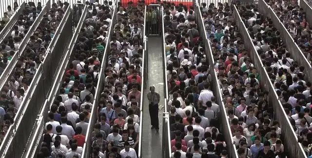

全球股市战战兢兢，世卫否定大流行病
原文链接 备份链接 世界卫生组织官员对韩国和伊朗等地爆发新冠病毒疫情表示担忧，但表示情况尚未上升到大流行病的程度。在美欧金融市场，这一模式已变得清晰：新增确诊病例数=增加的市场恐慌=疲弱的资本市场。这一模式会否必然在中国出现，尚待观察 …

人是一种社会生物，这就是为什么我们需要缔结社会契约，而新冠病毒可能就是那个触发点

图/视觉中国
文 | 沈联涛
香港乃至许多亚洲人都信奉的新自由主义秩序，建基于自由市场，以及一个重要的社会契约之上：每个公民都会得到国家和市场看顾。
这场新冠病毒疫情则提出了一个根本问题，即社会能否依照社会契约之承诺，看顾到每个公民？
“社会契约”这一概念源于法国大革命先驱和启蒙思想家卢梭的一本书。根据这一概念，个人与国家之间存在一项契约，国家承诺个人拥有其天赋的法定权利，并对其予以保护。卢梭区分了所谓的自然不平等与道德或政治不平等。在《社会契约论》（1762）开篇处，卢梭有一个著名的论断——“人生而自由，却无往而不在枷锁中”，这成为法国大革命的先声，但不幸的是，他本人却在1778年去世了。
当中国和其他国家数百万人因新冠病毒疫情而在家中自我隔离时，他们总算有时间远离狗苟蝇营，开始思考生活真正的意义。
但是，自由市场要求最低限度的政府参与，若真如此，如何应对这样规模的疫情？此外，在惶急之中人们莫衷一是，一个完全民主的政府能否处理好近期历史上前所未见的新危机？
新自由主义所宣扬与其所真正达成的结果之间的落差，使人们对其大失所望，从而在西方引发民主是否失灵的争论。麦肯锡全球研究院在近期发布了一篇出色的调查报告，考察了22个发达经济体（它们占据世界GDP的57％）内工人、消费者和储蓄者的今昔变化。
新自由主义秩序宣扬自由市场、个人自由、人权、法治和选举民主——本质上是民有、民治、民享的政府。
但麦肯锡发现，自上世纪70年代以来，22个经合组织国家的工人、消费者和储蓄者，虽然获得了更多工作机会，但其作为雇员的权益则受到侵蚀，工作缺乏安全感，退休后的养老金和医疗保健捉襟见肘，而储蓄者则没有获得足够多的收入。尽管平均收入有所增加，但中位数（大多数处于中等水平的人）的状况实际上变差了。
由于新自由主义意识形态主张自由市场竞争，工会权力遭到了削弱，签订短期合同的人数变多，收入的不安全感大为增加。同时，由于“购买者当心”条款将责任转移给了不了解他们所冒风险的消费者和投资者，消费者权益的保障也在恶化。此外，养老金权益从“固定收益”转变为“固定缴款”，养老金收益的风险便从雇主转移给了雇员。例如，受调查者中有一半的成年人退休后可能入不敷出，而四分之一的人根本就没有储蓄。
事实上，尽管美国可能是经合组织中经济表现最好的国家，但该国23％家庭的净资产为零或负值，而2001年时这个数额还是16％。因此，当乐施会宣布世界上最富有的那1％，其占有财富是剩余69亿人财富的两倍以上，难怪人们会觉得这个体制被一些人玩弄于鼓掌。
不平等已经演变成了极端不公正。国内生产总值在增加，但人们的切身感受却是经济变差了。
该如何应对这种不平等？
麦肯锡提出，21世纪未来几十年有两个优先事项。首先，通过技术、生产力进步和创造更多就业机会，以增加人们的收益。第二，寻找解决方案，改善受影响最严重群体的状况，这些人包括低技能、低工资的工人，妇女和少数族裔群体，欠发达地区的人们，以及年轻人。
但这意味着政界和国家要达成共识，以向富人征税，为大众增加投入，以及为所有人提供更完善的保障。正如最近的全球怀疑主义情绪所展现的，上述几项能否实现，还要打一个大大的问号。
产业革命促生了一种观念，即科学技术将带来更大程度的自由和机会，以及民主和大众获得更多知识（比如通过互联网），从而让所有人享有更平等的机会。如同香港的例子所表明，在自由市场环境下，尽管更容易获取知识，但如果整体的体制缺乏足够政治意愿，以缓解日益加重的不平等，官僚机构也不知道如何适应不断变化的环境，那么即便政府有着美好的出发点，不平等仍会加剧。
当无法估计危机的后果时，只有三种选择：战斗、逃跑、团结一致。
相互之间的斗争无济于事，因为大家共同面对的威胁事关生存，无关乎肤色或富裕程度，所有人的生存机会几无差别。一部分医护人员罢工时，医院员工将如何应对医疗危机？
逃避毫无意义，恐惧会加剧无知和偏见，例如谢菲尔德的中国学生因戴口罩而受到攻击。
在这场生死存亡的危机中，唯一有希望的选择是团结、合作，刷新社会契约。即使是最高效的政府，面对如此速度和规模的流行病疫情，或者未来将爆发的此类疫病，他们既有的知识和经验也完全不够用。单靠国家无法解决这个问题。必须所有人勠力同心，因为现代社会中，危机会影响到所有人。
要面对任何危机，先要勇于承认我们个人可能会犯错，我们需要为了共同的利益而与其他人协作，即便这是一些我们不喜欢的人。
人是一种社会生物，这就是为什么我们需要缔结社会契约，而新冠病毒可能就是那个触发点。
本文仅代表作者个人观点。
（翻译：臧博；编辑：袁满）

▲点击图片查看更多疫情报道
责编 | 黄端 duanhuang@caijing.com.cn
本文为《财经》杂志原创文章，未经授权不得转载或建立镜像。如需转载，请在文末留言申请并获取授权。
原文链接 备份链接 世界卫生组织官员对韩国和伊朗等地爆发新冠病毒疫情表示担忧，但表示情况尚未上升到大流行病的程度。在美欧金融市场，这一模式已变得清晰：新增确诊病例数=增加的市场恐慌=疲弱的资本市场。这一模式会否必然在中国出现，尚待观察 …
原文链接 备份链接 医院呼吁，并不危急的其他疾病患者，可以通过线上咨询、问诊，暂缓前往医院；但该看的病还是要去医院看，千万不要耽误治疗。 记者 | 周 洁 新冠肺炎疫情期间，其他疾病的病人怎么看病？记者连线上海各大医院发现，恢复门诊近一个 …
原文链接 备份链接 新冠病毒一直在变异，研究者发现截至目前仍较缓和。但鉴于当前疫情的严峻形势，共享病毒相关的数据对控疫更有帮助 室外环境中，患者咳嗽、说话等喷出来的病毒，很快会被大气稀释，在扩散过程中会衰减，所以浓度会变得很低，病毒活性也 …
原文链接 备份链接 小舅婆在战“疫”前线战斗，有有做了战地后方的“小记者”。画画内容的变化也悄然诉说着疫情的变化。 编者按 当很多小朋友把寒假过得快腻味的时候，有个叫有有的小朋友，却找到了一件有趣的持之以恒的事情——画抗疫漫画。 有有，大 …
原文链接 备份链接 顶住开市压力，A股在大跌后逐渐修复，沪指重回3000点，创业板创下新高。未来中国的经济增长靠什么？不是靠短期的货币政策、财政政策，而是消费升级与产业升级，A股已然掀起科技热潮 文 |《财经》 …